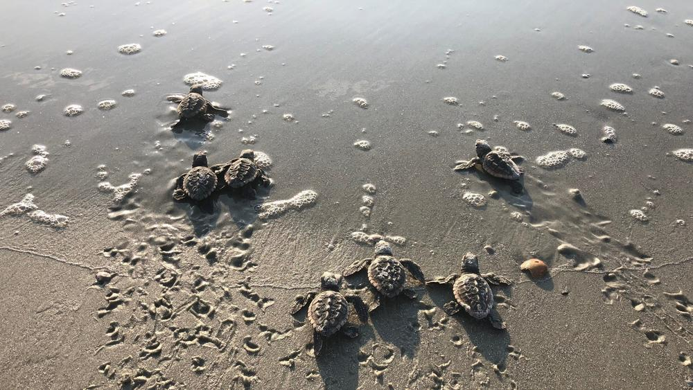
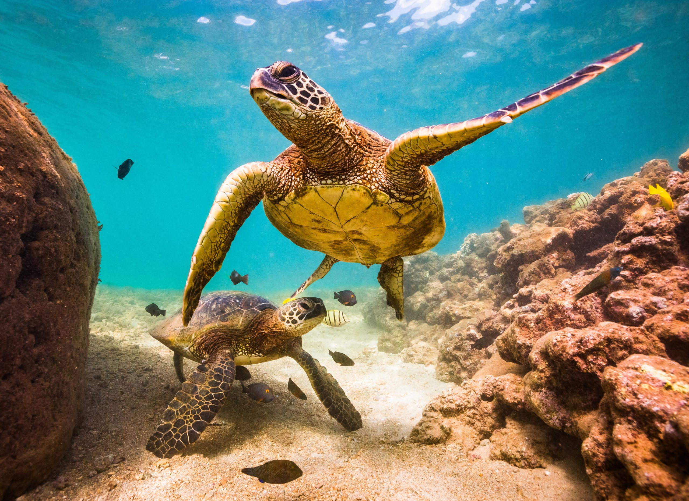
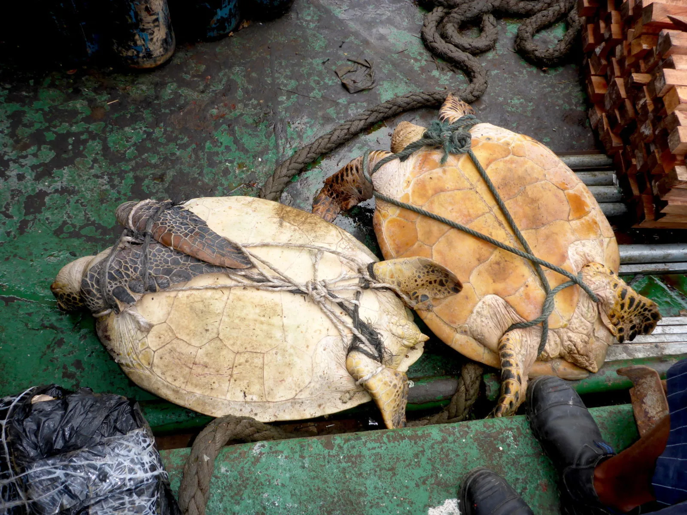
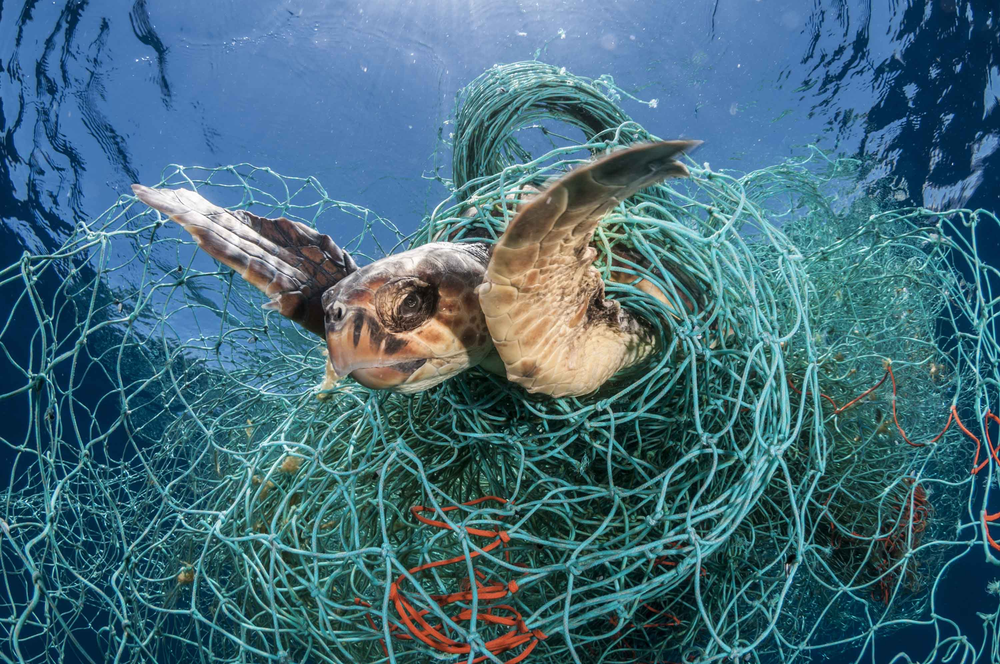

1.Habitat Loss and Fragmentation
The loss and fragmentation of turtles' natural habitats is one of the most serious challenges to their survival. Rapid development, agriculture, and deforestation have caused in the degradation of nesting beaches, wetlands, and other habitats.
and feeding grounds. These key environments are necessary for turtle breeding, feeding, and general survival. Human-caused disruptions make it difficult for turtles to find adequate nesting places and limit their capacity to travel, resulting in population reduction.

2.Pollution and Marine Debris
Pollution, both on land and in aquatic ecosystems,
endangers turtles. Chemical contaminants, such as
pesticides, heavy metals, and oil spills, pollute
bodies of water, rendering them poisonous to turtles
and their prey. Another significant problem is plastic
pollution, since turtles sometimes confuse plastic
garbage for food, resulting in internal injuries,
obstructions, and even death. These toxins have a
negative influence on the health and reproductive
success of turtle populations, bringing them dangerously
near to extinction.

3.Climate Change
Climate change's impacts, like as rising temperatures and sea levels, have a significant impact on turtles and their ecosystems. Temperature-dependent sex determination in turtles, for example, means that rising temperatures might alter gender ratios, potentially leading to unbalanced populations. Furthermore, increasing sea levels endanger breeding beaches and nesting sites by submerging or eroding them. Changes in ocean currents and temperatures can also alter food availability, thereby impacting turtle health and survival.

4.Overexploitation and Illegal Wildlife Trade
Turtles are used for a variety of uses, including meat, eggs, shells, and body parts. Overexploitation, along with the illicit wildlife trade, has resulted in a significant drop in turtle populations across the world. Turtles are revered in many cultures for their flesh and traditional medicinal benefits, leading to unsustainable hunting methods. Furthermore, the desire for turtle items, such as jewelry and souvenirs, promotes the illegal trade, endangering the species' existence.

5.Bycatch and Fishing Practices
Turtles are frequently caught by accident in fishing gear, a process known as bycatch. Entanglement in nets, longlines, and traps causes damage, drowning, or suffocating. Traditional fishing methods, such as bottom trawling, also devastate critical turtle habitats such as seagrass meadows and coral reefs. Turtle-friendly fishing tactics and the deployment of turtle excluder devices (TEDs) can greatly minimize bycatch and safeguard turtle populations.